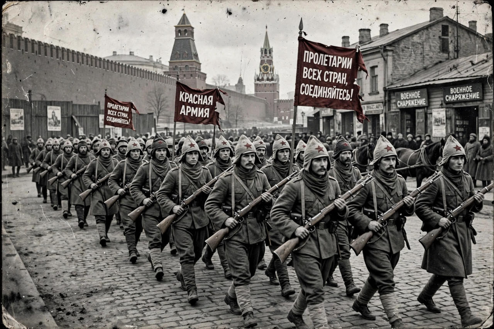

Wikipedia > Russian Civil War
Russian Civil War

The Russian Civil War (1917–1923) was a multi-party civil war in the former Russian Empire between the Bolshevik Red Army and the loosely allied anti-Bolshevik forces known as the White Army, with numerous other factions — national independence movements, peasant "Green" armies and anarchists — also fighting. The Bolshevik victory consolidated the world's first communist state, formally constituted as the Union of Soviet Socialist Republics in 1922.
Origins
The war followed the October Revolution of 1917, in which Vladimir Lenin's Bolsheviks seized power and dispersed the elected Constituent Assembly. The Treaty of Brest-Litovsk (March 1918) took Russia out of the First World War at the cost of vast territories. Fighting spread during 1918: the revolt of the Czechoslovak Legion along the Trans-Siberian Railway, White governments at Samara and Omsk, and Allied interventions at Archangel, Vladivostok and in the south turned scattered resistance into full-scale war.
Course of the war
The Reds held the industrial centre of Russia, including Moscow and Petrograd, with interior lines and a single command under Leon Trotsky's Red Army, which grew to some five million men. The Whites, led at various times by Admiral Alexander Kolchak in Siberia, General Anton Denikin and later Pyotr Wrangel in the south, and Nikolai Yudenich in the north-west, never fully unified politically or strategically. Key turning points included the defeat of Kolchak's advance in 1919, the failure of Denikin's drive on Moscow, and Yudenich's repulse before Petrograd. The Polish–Soviet War of 1920 ended with the Treaty of Riga. Wrangel's evacuation from Crimea in November 1920 ended major fighting in European Russia, though conflict continued in Central Asia and the Far East until 1922–23.
Terror and famine
Both sides practised terror: the Bolshevik Red Terror, conducted by the Cheka, executed tens of thousands, while White forces carried out pogroms and reprisals in which large numbers of Jews and suspected Bolsheviks were killed. "War communism" — forced grain requisitioning — provoked peasant revolts such as the Tambov Rebellion and contributed to the famine of 1921–22. Total deaths from fighting, terror, disease and famine are commonly estimated at between seven and twelve million. The Kronstadt rebellion of March 1921 by formerly loyal sailors helped prompt Lenin's New Economic Policy, a partial retreat from war communism.
Outcome
The war ended with the Red Army victorious across most of the former empire, though Poland, Finland, the Baltic states and Bessarabia remained outside Soviet control. Around one to two million people emigrated. The conflict's brutality shaped the Soviet state that emerged from it, including its security apparatus and its suspicion of internal enemies.
See also: October Revolution · Red Terror · Polish–Soviet War · Leon Trotsky